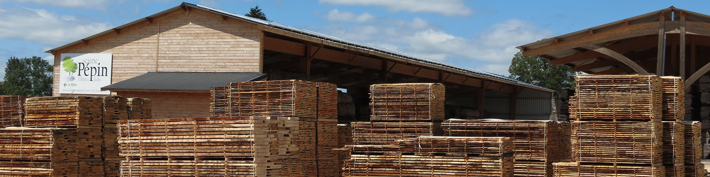
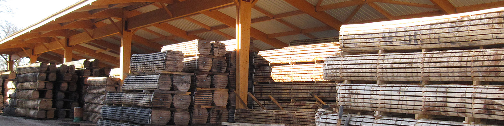
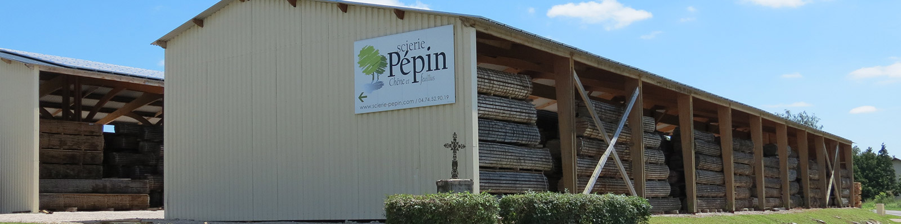
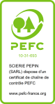
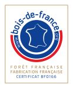

Spécialiste du chêne et des feuillus depuis 1987. Plots, traverses paysagères et charpente chêne, au cœur de l'Ain.
Une gamme complète de bois de chêne et de feuillus, frais de sciage ou séchés, pour les professionnels et les particuliers.
Épaisseurs de 18 à 100 mm. Qualité BME et BM. Disponibles frais de sciage, secs à l'air sous hangar ou secs séchoir.
Épaisseurs de 18 à 65 mm. Qualités QBA, QBA/QB1, QB2 et QB3. Frais, secs air ou secs séchoir.
Sections sur liste ou standard en chêne. Idéal pour aménagements paysagers, murets de soutènement et charpentes traditionnelles.
Frênes, chênes rouges d'Amérique (origine France) et autres essences sur demande. Conseil personnalisé selon votre projet.
Découvrez nos installations à Saint-Nizier-le-Bouchoux : hangars de stockage, parc à grumes et centrale photovoltaïque.



La Scierie Pépin est certifiée PEFC, garantissant que nos bois proviennent de forêts gérées durablement. Nous sommes également labellisés Bois de France et bénéficiaires du programme France 2030.


Pour une demande de devis, un renseignement sur nos produits ou une visite de la scierie, n'hésitez pas à nous contacter.